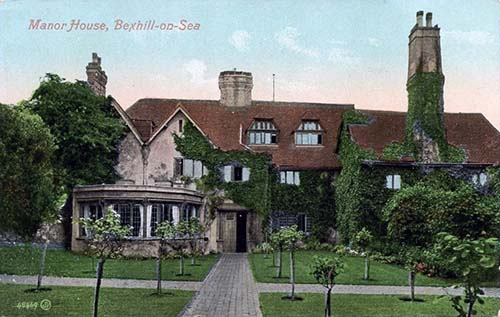

Old Town Manor
Great storm damaged original building.
1250 - Richard Wych (13th Bishop of Chichester) - may of rebuilt Bishops Palace
1447 - Adam de Moleyns (31st Bishop of Chichester) fortfied the building from the French.
1590 - Thomas Sackville - Lord High Treasurer - through Queen Elizabeth 1
1892 - 8th Earl de Warr - Renovated - First home to have a telephone
1903 - August Neven du Mont and family - German Painter
1912 - Sir Robert Leicester Harmsworth and family - businessman and politician
1963 - Bexhill Corporation (now Rother District Council) - no buyers
1965 - Bexhill Old Town Preservation Society
1967 - Demolished - to widen De La Warr Road
Nearly made into flats.
